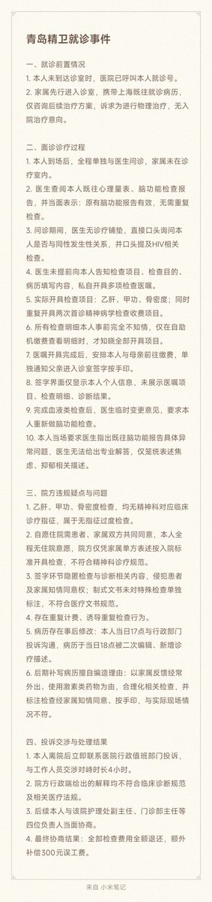
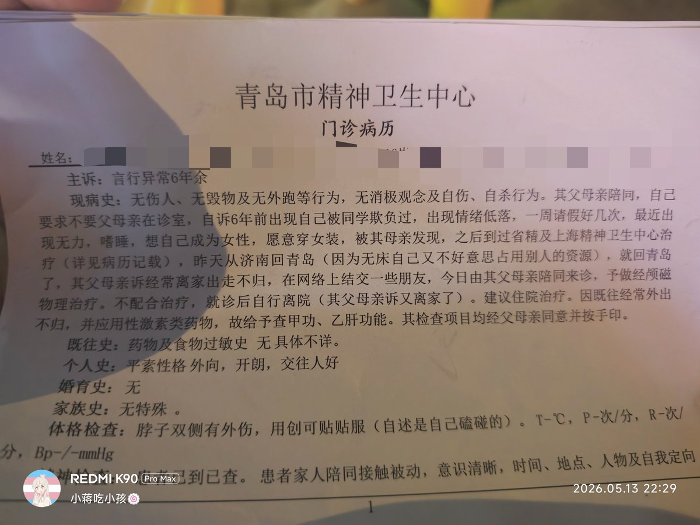

時璃風医詩🌈🏳️🌈
@hagishigure
门诊病历有点抽象，感觉太急着赚钱了上来就开经颅磁然后性格外向交往好还能来个建议住院治疗。
不过换我来的话我确实能合理的开出甲功和骨密度其中一个，但是都开那确实不合理圆不过去，看性激素五项的E2和T，E2高T低那就看甲功，都低那就看骨密度。
血液类检查也没必要开，这个指征是和碳酸锂关联的。


小蒋吃小孩🍥🏳️⚧
@xiaojiangnie
硬刚青岛精卫完整版喵，运用了ai进行总结喵，医生伪造事实，过度检查，篡改病历，我们不是任精卫宰割的羔羊喵！ https://t.co/2YLwHRkFOU